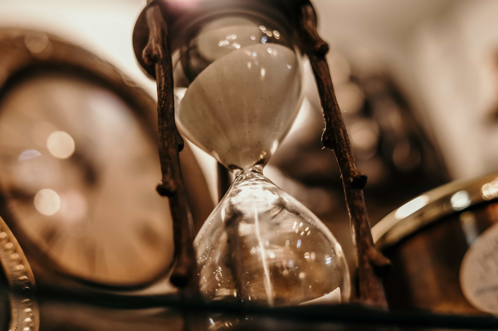
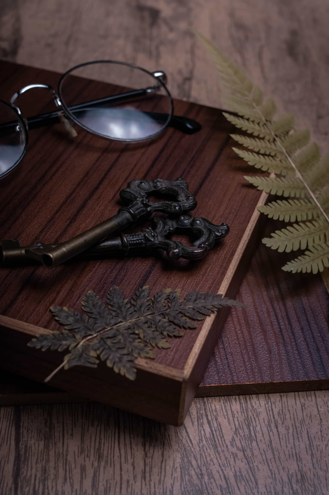

Forged by a mute court archivist who recorded the last dying whispers of a deposed dynasty, the locket stores acoustic echoes, If you press your ear to it, you hear a chorus of advice, warnings, and lingering grudges from past owners. However, each time you listen, one of your own recent memories quietly fades away to make room inside the silver casing.
Created by an ancient solar cult during a prolonged eclipse, this hourglass allows the user to temporarily pause local time for exactly sixty seconds. However, the golden sand is composed of pulverized daylight, and each use permanently shortens the day by one minute in the region where it is turned, slowly bringing an eternal winter night closer to the land.

It remains pitch black during times of peace, a warm amber color when deceit is near, and flashes a blinding white-hot flare right before an act of betrayal occurs. It once belonged to the captain of a royal guard whose entire kingdom fell overnight because he ignored the ring's faint warming, believing it was just a trick of the hearth fire.
It doesn't open a physical door in the mortal realm. Instead, when inserted into any old wooden keyhole and turned counter-clockwise while moonlight hits the lock, it opens a temporary five-minute threshold into a quiet, twilight-lit library that exists in the space between forgotten memories.
